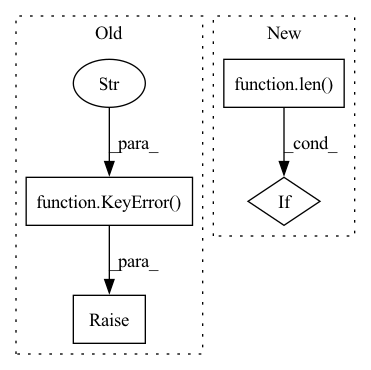

Pattern ID :21830
Before Change
dst_classes, _ = refine_cls(train_data_cfg, model_meta, adapt_type)
cfg.model.head.num_classes = len(dst_classes)
else:
raise KeyError(f"can not find classes meta data from {cfg.load_from}." )
// Pseudo label augmentation
pre_stage_res = kwargs.get("pre_stage_res", None)
if pre_stage_res:After Change
gamma = 2 if efficient_mode else 3
sampler_type = "balanced"
if len( set(model_classes) & set(dst_classes)) == 0 or set(model_classes) == set(dst_classes):
cfg.model.head.loss = dict(type="CrossEntropyLoss", loss_weight=1.0)
else:
cfg.model.head.loss = ConfigDict(In pattern: SUPERPATTERN
Frequency: 3
Non-data size: 4
Instances Fragment ID: 69562325
Project Name: openvinotoolkit/model_preparation_algorithm
Commit Name: 791c40fccdb87fd5bd6fbd1d66ffe74db243f0b2
Time: 2022-07-11
Author: harim.kang@intel.com
File Name: mpa/cls/stage.py
M Class Name: ClsStage
N Class Name: ClsStage
M Method Name: configure_task(3)
N Method Name: configure_task(3)
M Parent Class: Stage
N Parent Class: Stage
M File Name: mpa/cls/stage.py
N File Name: mpa/cls/stage.py
M Start Line: 146
M End Line: 250
N Start Line: 150
N End Line: 243
Before Change
else:
for key in item:
if key not in self.data:
raise KeyError("when append a item to the batch, raise this error!" )
self.data[key].append(item[key])
if self.pad_len[key] < len(item[key]):
// 保持 pad_len 是最大的
self.pad_len[key] = len(item[key])After Change
"""
if len(item) != len(self.feature_name):
raise KeyError("when append a batch, item is not equal length with feature_name")
for i in range(len( item) ):
key = self.feature_name[i]
self.data[key].append(item[i])
if key in self.pad_item:
self.origin_len[key].append(len(item[i]))
if self.pad_len[key] < len(item[i]):
// 保持 pad_len 是最大的 Fragment ID: 69562308
Project Name: libcity/bigscity-libcity
Commit Name: e8d50fbd09be309b197c500d121e7b52c6a79468
Time: 2020-12-22
Author: 842595644@qq.com
File Name: trafficdl/data/batch.py
M Class Name: Batch
N Class Name: Batch
M Method Name: append(2)
N Method Name: append(2)
M Parent Class: object
N Parent Class: object
M File Name: trafficdl/data/batch.py
N File Name: trafficdl/data/batch.py
M Start Line: 22
M End Line: 38
N Start Line: 29
N End Line: 40
Before Change
if key in self.materializer_types:
return self.materializer_types[key]
else:
raise KeyError(
f"Type {key} does not have a default `Materializer`! Please "
f"specify your own `Materializer`."
)
def get_materializer_types(
self,
) -> Dict[Type[Any], Type["BaseMaterializer"]]:After Change
// Make sure that there is only a single materializer
if len(materializers_for_compatible_superclasses) == 1:
return materializers_for_compatible_superclasses.pop()
elif len( materializers_for_compatible_superclasses) > 1:
raise StepInterfaceError(
f"Type {key} is subclassing more than one type, thus it "
f"maps to multiple materializers within the materializer " Fragment ID: 69562305
Project Name: maiot-io/zenml
Commit Name: 7120c4e1acff5b744cd2b9223d77952d919aa80d
Time: 2022-01-31
Author: 36421093+bcdurak@users.noreply.github.com
File Name: src/zenml/materializers/default_materializer_registry.py
M Class Name: MaterializerRegistry
N Class Name: MaterializerRegistry
M Method Name: __getitem__(2)
N Method Name: __getitem__(2)
M Parent Class:
N Parent Class:
M File Name: src/zenml/materializers/default_materializer_registry.py
N File Name: src/zenml/materializers/default_materializer_registry.py
M Start Line: 74
M End Line: 77
N Start Line: 82
N End Line: 101